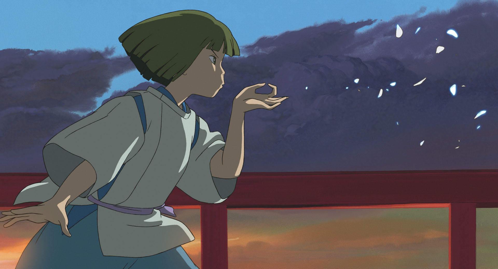
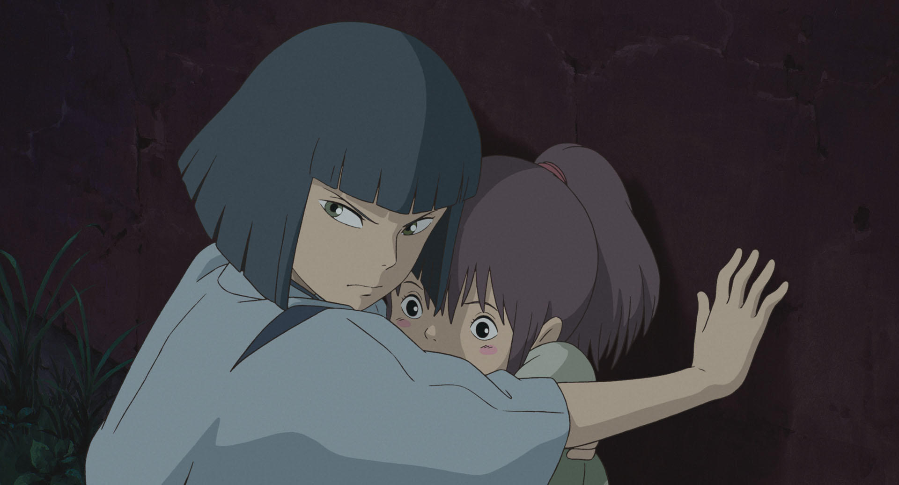
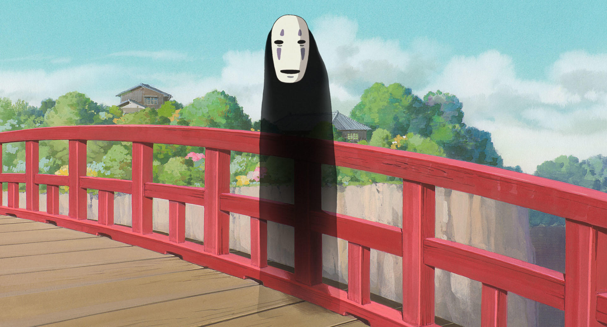
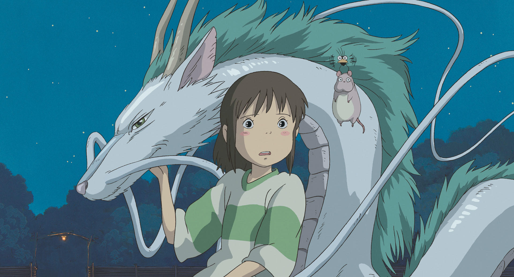

| 原作・脚本・監督 | 宮崎 駿 |
|---|---|
| プロデューサー | 鈴木敏夫 |
| 原作・脚本・監督 | 宮崎 駿 |
| 音楽 | 久石 譲 |
| 主題歌 | 木村 弓 |
| 声の出演 |
柊 瑠美 ⋅ 入野自由 ⋅ 夏木マリ ⋅ 内藤剛志 ⋅ 沢口靖子 ⋅ |
| 上映時間 | 約125分 |
| 配給 | 東宝 |
| 公開日 | 2001.7.20（金） |
10歳の少女荻野千尋は、両親と共に引越し先のニュータウンへと車で向かう途中、父の思いつきから森の中の不思議なトンネルから通じる無人の町へ迷い込む。そこには神道の八百万の神々が住んでおり、人間が足を踏み入れてはならない世界だった。町の怪しい雰囲気を怖がる千尋をよそに、探検気分の両親は食堂街の中で一軒だけ食べ物が並ぶ無人の飲食店を見つけ、店員が来たら代金を払えばいいと勝手に置いてあった食べ物を食べてしまう。昼下がり
、両親の誘いを断り食堂街を一人で歩く千尋は、旅館のような大きな建物の前の橋に着き、橋の上から橋の下を走る電車を見ていた。背後からの気配に気づき振り返ると少年が立っており、少年に強い口調ですぐに戻れと言われた為、急速に日が暮れる中
、両親を探すが、店では両親の服を着た大きなブタが二匹いて、食べ物を食い散らかしていた。千尋の両親は、神々に出す食べ物に手をつけた為、罰としてブタにされてしまったのだ。夜になり、千尋はトンネルに戻ろうと食堂街の出口に来るが、昼は草原だった所が大河に変わっており、船から降りてくる怪物のような者達を目にした事でこれは悪い夢だと思い込む。悪夢が消える事を願って自分が消滅しそうになるが、先程の少年ハクに助けられる...
ハクは、八百万の神々が客として集う「油屋」という名の湯屋で働いていた。油屋の主人は、相手の名を奪って支配する恐ろしい魔女の湯婆婆で、仕事を持たない者は動物に変えられてしまうと千尋に教える。千尋は、雇ってくれるよう湯婆婆に懇願し、契約の際に名を奪われ「千」と新たに名付けられ、油屋で働く事になる。ハクは、本当の名前を忘れると元の世界に戻れなくなると忠告する。ハクもまた名を奪われ、自分が何者であったのかを思い出せずにいた。しかし、彼はなぜか千尋の事を知っており、自分の名前は忘れても千尋の事は覚えているのだという。一方、千尋にはハクの正体に心当たりがない。
ブタにされてしまった両親を助ける為油屋で働き始めた千尋だったが、彼女は人間である為油屋の者達から嫌われる。油屋にカオナシという化け物が来るが、客だと思い込んだ千尋に親切にされる。その後、千尋は皆から悪臭とひどい汚れの客の相手まで押しつけられる。しかし、彼女の実直な働きにより、客から大量の砂金が店にもたらされると、千尋は皆に一目置かれる存在になる。千尋は世話をした礼としてその客から不思議な団子を貰う。
翌日の昼、竜の姿のハクは湯婆婆の命令により、彼女と対立している双子の姉の銭婆から、魔女の契約印を盗み飲み込む。しかし、強い魔力を持つ銭婆は、ハクに契約印の守りのまじないとヒトガタで重傷を負わせる。だが、彼は傷ついたまま最上階の湯婆婆の部屋に向かう。傷ついたハクを従業員部屋から見た千尋は、彼を助けようと後を追う。その時、沢山のヒトガタの内の一つが、千尋の背中に張り付く。上に行く途中の彼女と再会した、一階の風呂場から上階の客室に行く途中のカオナシは、砂金で千尋の気を引こうとするが、彼女は断り、先を急ぐ。それを見て呆然とするカオナシに、兄役が説明すると誤解して怒り、兄役達を飲み込んでしまう。湯婆婆が部屋を出た後、千尋が部屋に入る。その後、千尋を追って部屋に入った湯婆婆の息子である坊を、ヒトガタから現れた銭婆がネズミに変え、その隙にハクが尾でヒトガタを叩き破ると銭婆は消える。その後、千尋がハクに不思議な団子の半分を飲み込ませ、体内の契約印と虫を吐き出させ元の姿に戻すが、ハクは衰弱しており気絶する。千尋はハクを助けたい一心で、釜爺から電車の切符を受け取り、危険など顧みずに銭婆の所へ謝りに行く事を決意する。
その頃、客室で千尋に会いたいカオナシが暴れていた。再び彼女と対面したカオナシは、食べ物で千尋の気を引こうとするが、彼女は断り、逆に団子の残りの半分を彼に食べさせ、飲み込まれた従業員達を吐き出させ、助ける。そして千尋は、なぜかついて来た坊と、彼女が油屋から誘い出したカオナシを伴って銭婆の家を訪れる。銭婆は千尋を穏やかに受け入れ、千尋は銭婆に魔女の契約印を返しハクの行いを謝り、銭婆は千尋に旅の仲間と協力して人力で作った紫の髪留めを贈る。
一方、目を覚ましたハクは、坊が銭婆の元へ行っている事を湯婆婆に伝える。ハクは坊を連れ戻す事を条件に千尋と両親を解放するよう迫った後、帰る手段のなかった千尋を竜の姿で迎えにいく。ハクは銭婆から許しを得て、千尋と共に油屋への帰路につく。その途中で、千尋は自分が幼い頃に落ちた「川」がハクの正体である事を思い出し、彼女が川の名前を告げた事でハクは自分の名前を思い出す。ハクは、落とした靴を拾おうとして溺れかけた千尋を、浅瀬に運び助けたのだった。
翌朝
、臨時休業をしている油屋に帰ったハク達。ハクは千尋と両親を解放するよう湯婆婆に要求する。従業員達も今は千尋の味方である為ハクに賛同する。味方がいなくなり怒る湯婆婆は、油屋の前に集めたブタの中から両親を言い当てろと千尋に難題を出す。千尋はブタ達を真剣に見つめるとこの中に両親はいないと正解を言い当てる。湯婆婆の目論見は外れ、契約書が消滅した事で千尋は晴れて自由の身となり、従業員達に祝福されながら油屋を去る。
昼になり、異世界と人間界の境界のトンネルに帰る為食堂街の出口に着くと、夜は大河に変わっていた所が草原に戻っていた。見送る為に一緒に来たハクは千尋に、この先には一人で行く事、この先の帰り道で振り返ってはいけない事、湯婆婆の弟子を辞めて自分も元の世界に戻るつもりである事を伝え、再会を約束して別れる。トンネルを出るまでは振り返ってはいけないというハクの言い付けを守り草原を歩き続けると、人間に戻った両親がトンネルの前で何事もなかったかのように待っていた。思わず振り返りそうになるが必死に我慢して振り返らず、トンネルを抜けて人間界に戻った千尋が振り返ると、トンネルは最初に来た時とは違う姿に変わり、彼女は異世界の事を忘れる。しかし銭婆から貰った紫の髪留めはトンネルを抜けても残り、輝いていた。その後、再び車に乗って引越し先に向かう所で物語は幕を閉じる。
最後に、幼い千尋が川に落とした桃色の靴の片方が、流れていく様子が映る。
もっと読む